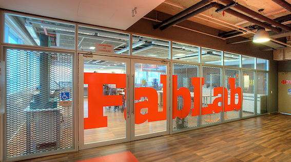

Sobre o site
Bem vindos! Este site é sobre mim, aluno de engenharia do Insper e busco trazer para você usuário os trabalhos feitos por mim ao longo do curso. Para isso, existem diversas categorias que podem facilitar sua busca. Ao lado você encontrará elas! Divirtar-se!
Este site surgiu de um trabalho de uma matéria chamada Codesign de Aplicativos, com o intuito de introduzir conceitos de arquitetura de informação e conceitos de design focado no usuário. Com isso, em grupos, tivemos várias discussões para saber qual seria o melhor design para nosso site, além de saber qual seria a melhor forma de organizar os trabalhos do curso em categorias. Resultando assim nesse site.